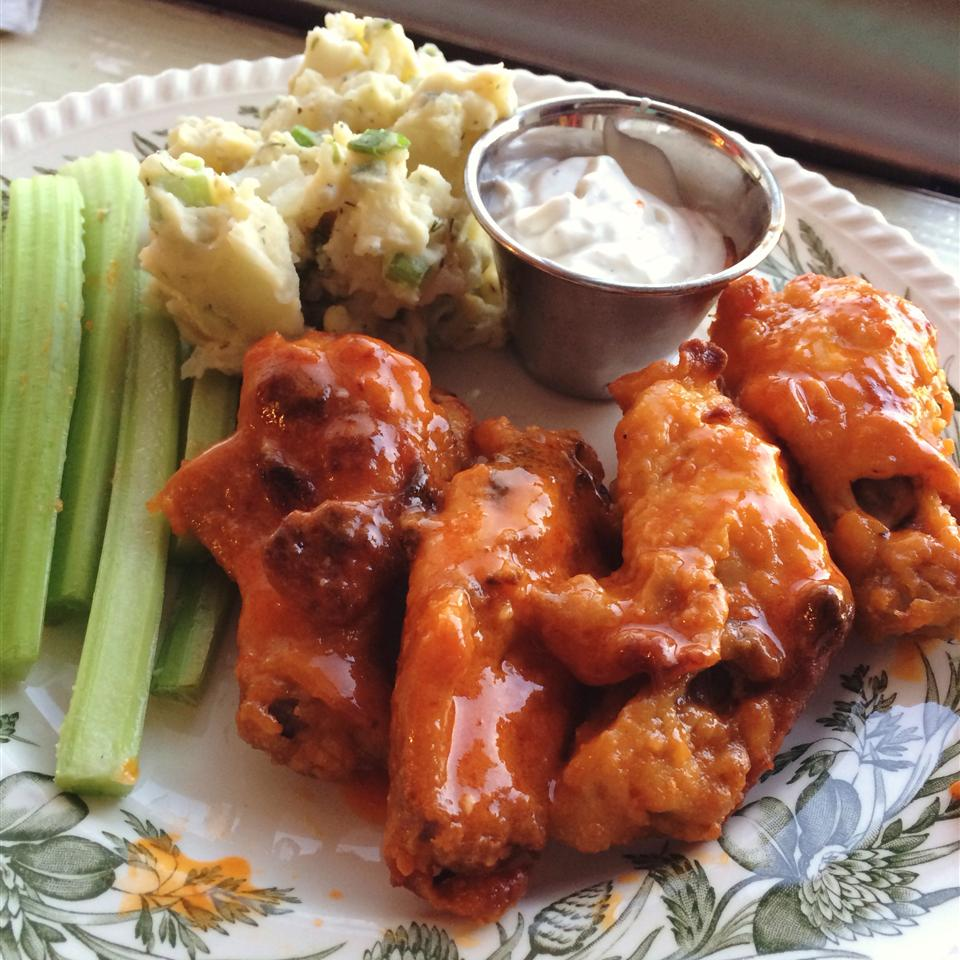

Baked Buffalo Wings

The Easiest Wings You'll Ever Make
If you love eating buffalo wings, but don't konw where to start, this is the recipe for you! They'll be
crispy just like at your favorite restaurant!
Ingredients
- cooking spray
- 3/4 cup all-purpose flour
- 1/2 teaspoon cayenne pepper
- 1/2 teaspoon garlic powder
- 20 chicken wings
- 1/2 cup melted butter
- 1/2 cup hot pepper sauce
Steps
- Line a baking sheet with aluminum foil, and lightly grease with cooking spray.
- Place flour, cayenne pepper, garlic powder, and salt into a resealable plastic bag, and shake to mix.
Add chicken wings, seal the bag, and toss until well coated with the flour mixture. Transfer wings to
the prepared baking sheet and refrigerate for at least 1 hour.
- Preheat the oven to 400 degrees F (200 degrees C).
- While the oven is preheating, whisk together melted butter and hot sauce in a small bowl. Dip wings into
butter mixture and place back on the baking sheet.
- Bake in the preheated oven for 20 minutes. Flip wings and continue to cook until crispy on the outside and no
longer pink in the center, about 25 more minutes.
Go back